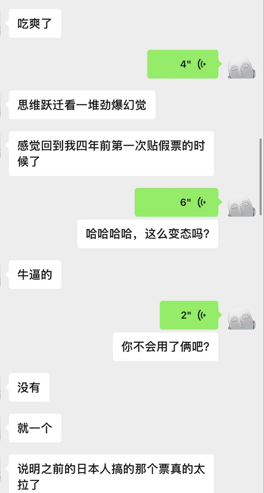
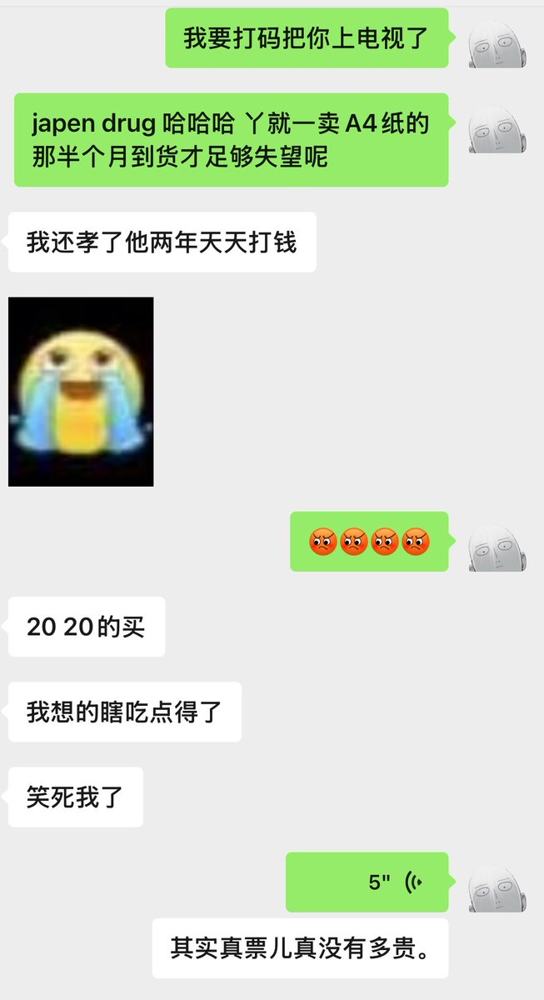

Jahseh
@godspeedyou50
谢谢朋友们这么关心我，在我做推特之前，生命中并没有谁在意我所谓的生日，我自己也很烦庆生这个概念，收礼物就要送礼物，人情来往太麻烦。
所以我打个广告，今天来找我的第二人格Pharmakon的宝子在瓦楞斯大人的定价下额外每个减20元，但是瓦楞斯的粉丝们不许来找我，找他也会折！ 哈哈哈哈
然后今天依然接算命单，我农历生日再去吃顿好的，今天的客户们我会一并上香诚心帮大家祈福


Pharmakon
@Pharmakon14138
飘飘糖很多人没感觉 有时间我觉得我应该认真做一期关于引导的重要性以及学会感受体感 迷幻物质是很需要这些的！ https://t.co/w2CLCLbAP4